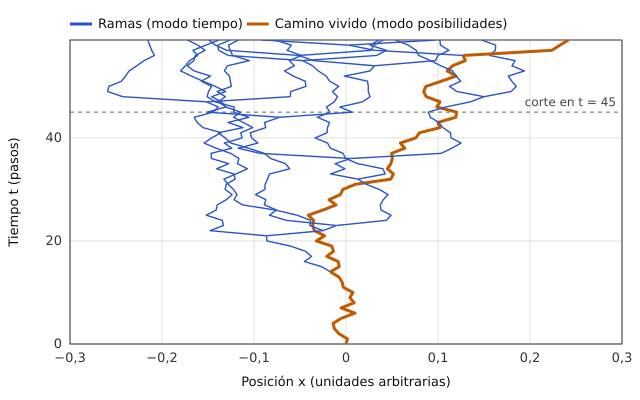
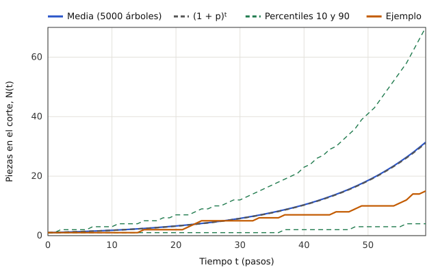
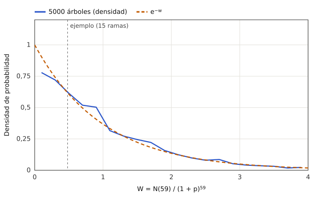

Preprint · documento de trabajo sin revisión por pares
Líneas de mundo que se ramifican: cortes, proyecciones y tres lecturas de una cuarta dimensión
Branching worldlines: slices, projections and three readings of a fourth dimension
Bruno Loiacono · Estudiante de Física, Universidad de Buenos Aires · Noviembre de 2026
Resumen
Si se mira la vida entera de algo como un solo objeto, con el tiempo como una dimensión más, y ese algo se divide, su forma completa es un árbol, y lo que vemos en cada instante es un corte. Este trabajo precisa esa idea. Primero separa tres lecturas de la «cuarta dimensión»: el tiempo del espacio-tiempo de Minkowski, el conjunto de futuros posibles y una dimensión espacial extra. Después agrega dos correcciones: un objeto que no se divide es un tubo, no un árbol, y un corte no es una proyección. Un modelo de objetos en un plano que se dividen con probabilidad $p$ por paso permite mostrar las tres cosas con números. En el árbol de ejemplo, ocho piezas que parecen independientes en un instante comparten un único antepasado. El número de piezas sigue un proceso de Galton–Watson cuya media $(1+p)^t$ y cuya varianza se derivan en forma cerrada y coinciden con 5000 simulaciones. La dispersión es enorme: con $p = 0{,}06$, a los 59 pasos el 10 % de los árboles tiene 4 piezas o menos y otro 10 %, 70 o más. Se discuten los linajes celulares, el tiempo ramificado de la lógica y la interpretación de muchos mundos.
Abstract
If the whole life of something is seen as a single object, with time as one more dimension, and that something divides, its complete shape is a tree, and what we see at each instant is a slice. This paper makes the idea precise. It first separates three readings of the “fourth dimension”: the time of Minkowski spacetime, the set of possible futures, and an extra spatial dimension. It then adds two corrections: an object that does not divide is a tube, not a tree, and a slice is not a projection. A model of objects in a plane that divide with probability $p$ per step shows all three points with numbers. In the example tree, eight pieces that look independent at one instant share a single ancestor. The number of pieces follows a Galton–Watson process whose mean $(1+p)^t$ and variance are derived in closed form and agree with 5000 simulations. The spread is huge: with $p = 0.06$, after 59 steps 10% of the trees have 4 pieces or fewer and another 10% have 70 or more. Cell lineages, branching-time logic and the many-worlds interpretation are discussed.
Palabras clave: línea de mundo; universo bloque; proceso de Galton–Watson; linaje celular; tiempo ramificado; muchos mundos.
Keywords: worldline; block universe; Galton–Watson process; cell lineage; branching time; many worlds.
1. Introducción
La idea que motiva este trabajo se formulaba así: si se mira algo a lo largo de toda su existencia como un solo objeto, y ese algo se ramifica, entonces su forma en «la cuarta dimensión» es un árbol. La frase es sugerente, pero «cuarta dimensión» puede querer decir tres cosas muy distintas:
- El tiempo. En la relatividad, el tiempo forma con el espacio un continuo de cuatro dimensiones, y la historia entera de un objeto es una figura en ese continuo.
- Las posibilidades. El conjunto de los futuros alternativos. No es una dimensión del espacio ni del tiempo, sino del espacio de lo que podría pasar.
- Una cuarta dimensión espacial. Una dirección más del espacio, perpendicular a las tres conocidas.
Con la primera lectura, el árbol es un objeto real; con la segunda, un mapa de alternativas del que se vive un solo camino; con la tercera, un objeto quieto en cuatro dimensiones cuyos cortes veríamos pasar. Además, la idea necesita dos correcciones. Un objeto que no se ramifica no tiene forma de árbol sino de tubo. Y lo que vemos en un instante es un corte de la historia, no su proyección: el corte muestra piezas separadas sin pasado; la proyección, todo el pasado sin orden.
La sección 2 recorre lo que dijeron sobre cada lectura la física, la biología, la lógica y la filosofía. La sección 3 define un modelo de objetos que se dividen en un plano, con el tiempo como tercera dimensión, y deriva la estadística del número de piezas. La sección 4 aplica el modelo a un árbol de ejemplo y a 5000 árboles simulados. La sección 5 discute qué cambia entre las lecturas y qué deja afuera el modelo.
2. Antecedentes
2.1. El tiempo como dimensión
En su conferencia Raum und Zeit, Minkowski (1909) le dio a la relatividad especial su forma geométrica, el espacio-tiempo, e introdujo la línea de mundo: la trayectoria de una partícula en el espacio-tiempo, el conjunto de todos los eventos de su existencia. Un objeto extendido no tiene una línea sino un tubo de mundo. Si las historias son figuras en el espacio-tiempo, surge la imagen del universo bloque: todo lo que pasó, pasa y pasará está en el bloque, y el presente es solo el corte en el que nos encontramos. Weyl (1949) lo expresó diciendo que el mundo objetivo simplemente es, no sucede, y que solo para la conciencia que recorre su línea de mundo aparece una sección del mundo como imagen fugaz.
La relatividad agrega un argumento. Observadores en movimiento relativo no coinciden en qué eventos son simultáneos: cortan el espacio-tiempo con planos de simultaneidad distintos. Rietdijk (1966) y Putnam (1967) argumentaron que, si cada observador tiene el mismo derecho a considerar real su presente, el futuro tiene que ser tan real como el presente. También pone un límite a la forma de las ramas: ninguna línea de mundo puede salir del cono de luz de sus eventos, una estructura causal que desarrollan Hawking y Ellis (1973).
2.2. Persistencia e identidad
McTaggart (1908) distinguió dos maneras de ordenar los eventos: la serie A, como pasados, presentes y futuros, propiedades que cambian; y la serie B, como anteriores o posteriores, relaciones que no cambian. El universo bloque es un mundo de pura serie B. Mirar la vida entera de algo como un solo objeto es, en metafísica, el perdurantismo: un objeto que existe a lo largo del tiempo está formado por partes temporales, como un gusano en el espacio-tiempo (Lewis 1986; Sider 2001). Su rival, el endurantismo, sostiene que el objeto está entero en cada instante. Parfit (1984) discutió personas que se «dividen» y concluyó que la identidad no es lo que importa, sino la continuidad psicológica, que sí puede ramificarse. Para el perdurantista, si una ameba se divide, el objeto es el árbol entero, y la pregunta «¿cuál de las hijas es la madre?» se reemplaza por «¿qué partes del árbol comparten estas dos ramas?».
2.3. Linajes
El modo «tiempo» de la idea tiene un modelo físico concreto: un linaje celular. Sulston et al. (1983) reconstruyeron el linaje embrionario completo del nematodo Caenorhabditis elegans, observando embriones vivos al microscopio: un árbol de 671 células, de las cuales 113 mueren por muerte celular programada. A otra escala, la única figura de Darwin (1859) es un diagrama de ramas que se dividen a lo largo del tiempo. El árbol de la vida no es estrictamente un árbol: la transferencia horizontal de genes hace que algunas ramas se vuelvan a juntar, y Doolittle (1999) propuso que en la base la historia de la vida se parece más a una red. Algunos procesos dejan su historia ramificada escrita en el espacio, como si la naturaleza hiciera la proyección: Witten y Sander (1981) mostraron que partículas que se mueven al azar y se pegan a un agregado producen estructuras ramificadas como las de un rayo o un coral.
2.4. Procesos de ramificación
Watson y Galton (1875) resolvieron el problema de Galton sobre la extinción de los apellidos y fundaron la teoría de los procesos de ramificación: si el número medio de hijos por individuo es $m$, el linaje se extingue con probabilidad 1 si $m \le 1$ y sobrevive con probabilidad positiva si $m > 1$. Harris (1963) sistematizó la teoría. Yule (1925) introdujo el proceso en que cada individuo se divide a un ritmo constante, para explicar por qué algunos géneros biológicos tienen muchas especies y otros pocas. Kingman (1982) formalizó la mirada inversa, el coalescente: cómo se juntan hacia el pasado los linajes de una muestra, que es la herramienta básica para inferir un árbol a partir del corte presente.
2.5. Tiempo ramificado y posibilidades
En «El jardín de senderos que se bifurcan», incluido en Ficciones (Borges 1944), un personaje descubre que su antepasado escribió una novela en la que, ante cada alternativa, se eligen todas, y los porvenires proliferan y se bifurcan. En lógica, Prior (1967) discutió modelos en que el tiempo es lineal hacia el pasado y se ramifica hacia el futuro, y Thomason (1970) y Belnap et al. (2001) desarrollaron su semántica. La pregunta es antigua: Aristóteles discutió si «mañana habrá una batalla naval» es verdadera o falsa hoy. En un tiempo ramificado, la oración es verdadera en unas ramas y falsa en otras.
2.6. Muchos mundos
Everett (1957) propuso tomar la ecuación de Schrödinger al pie de la letra, sin colapso: al medir, el observador queda entrelazado con el sistema y el estado total contiene una rama por cada resultado. DeWitt (1970) la llamó interpretación de los muchos mundos. La teoría de la decoherencia (Zurek 2003) explica cómo el entorno selecciona estados robustos que definen las ramas, y Wallace (2012) defiende esa versión. El problema más discutido es el de las probabilidades: si todas las ramas existen, qué significa que un resultado tenga probabilidad 0,3.
2.7. Una cuarta dimensión espacial
Abbott (1884) y Hinton (1904) exploraron qué vería un ser de pocas dimensiones cuando un objeto de una dimensión más atraviesa su mundo: una secuencia de cortes que aparecen, cambian de forma y desaparecen. Henderson (1983) documentó cuánto influyó esa cuarta dimensión en el cubismo y el futurismo.
3. Modelo
3.1. Objetos que se dividen en un plano
El modelo usa una dimensión menos que la idea: un plano más el tiempo. El tiempo se mide en pasos enteros $t = 0, 1, \dots, T$ y las posiciones $\mathbf r = (x, y)$ en unidades arbitrarias de longitud $L$. En $t = 0$ hay una pieza en el origen. En cada paso, cada pieza viva se divide con probabilidad $p$ (adimensional), mientras el total sea menor que un tope $N_{\max}$. Si no se divide, se desplaza al azar:
con $\delta$ en unidades de $L$. Si se divide, desaparece y nacen dos hijas en $\mathbf r_i \pm \tfrac{s}{2}(\cos\theta, \sin\theta)$, con $\theta$ uniforme y $s$ la separación inicial, también en $L$. Los valores por defecto son $p = 0{,}06$, $T = 59$, $N_{\max} = 48$, $\delta = 0{,}012\,L$, $s = 0{,}2\,L$ y semilla 5.
3.2. Corte y proyección
Si la pieza $i$ vive en los instantes $n_i \le t < m_i$, el corte en $t$ y la proyección de toda la historia son
El corte conserva qué estaba dónde a la vez y pierde el pasado; la proyección conserva por dónde pasó cada rama y pierde cuándo. Ninguno de los dos alcanza para reconstruir el árbol.
3.3. Número de piezas
Sin tope, cada pieza tiene en cada paso uno o dos «descendientes», con probabilidades $1-p$ y $p$. Es un proceso de Galton–Watson con media $m = 1 + p$ y varianza $\sigma^2 = p(1-p)$ por individuo. Las fórmulas estándar de esos procesos (Harris 1963) dan
donde la simplificación usa $\sigma^2/(m-1) = 1-p$. Las dos cantidades son números de piezas, adimensionales. El cociente $W_t = N(t)/(1+p)^t$ tiene media 1 y converge a una variable aleatoria $W$ con
Que la varianza de $W$ no tienda a cero quiere decir que el proceso nunca olvida el azar de sus primeras divisiones. Para $p \to 0$, $\operatorname{Var} W \to 1$, la varianza de una exponencial de media 1, que es el límite de tiempo continuo del proceso de Yule.
3.4. El camino vivido
En la lectura de posibilidades, se vive un solo camino de la raíz a una hoja, eligiendo una hija con probabilidad $1/2$ en cada división. Una hoja a la que se llega después de $k_\ell$ divisiones tiene probabilidad
donde la suma vale 1 para cualquier árbol binario completo. Las hojas no son equiprobables: las ramas que se dividen más «diluyen» su probabilidad.
3.5. Conos de luz
Si el paso de tiempo es $\Delta t$ y la velocidad máxima es $c$, ninguna rama puede desplazarse más de $c\,\Delta t$ por paso:
con los dos lados en unidades de longitud. El modelo no impone esta condición; la sección 4 mide cuánto se aleja de ella.
4. Resultados
Todas las cifras salen de paper/figuras/generar.js.
4.1. El árbol de ejemplo
Con la semilla 5, el árbol tiene 29 piezas a lo largo de su historia y 15 ramas al final. En el corte $t = 45$ hay 8 piezas (figura 1). Alguien que viviera en el plano vería ocho objetos independientes; en la historia completa son partes de un solo objeto, conectadas por debajo del corte.
En la lectura de posibilidades, el árbol es el mismo pero cambia su significado: se vive un solo camino. Con la semilla 1 para las elecciones, el camino vivido pasa por 2 divisiones y tiene probabilidad $2^{-2} = 1/4$. Las profundidades de las hojas van de 2 a 9, así que sus probabilidades van de $1/4$ a $1/512$, y suman exactamente 1, como pide la ecuación \eqref{eq:camino}. Quien vive en la rama elegida ve una sola pieza en cada corte; las otras siete del instante 45 son lo que podría haber pasado.
Con $p = 0$ queda una pieza en todos los instantes: la historia es un tubo, no un árbol.

4.2. Crecimiento y dispersión
Con 5000 árboles sin tope y $p = 0{,}06$, la media de $N(59)$ es 31,4, frente a $(1{,}06)^{59} = 31{,}12$ de la ecuación \eqref{eq:media}; el desvío estándar es 29,0, frente a 28,8 de la ecuación \eqref{eq:varianza} (figura 2). La varianza de $W_{59}$ es 0,869, entre el valor exacto a $t = 59$, 0,858, y el límite \eqref{eq:W}, $(1-p)/(1+p) = 0{,}887$. La distribución de $W$ es cercana a una exponencial (figura 3).
La dispersión es enorme. Los percentiles 10, 50 y 90 de $N(59)$ son 4, 23 y 70 piezas: el árbol de ejemplo, con 15 ramas, no es raro, y el 36,9 % de los árboles termina con 15 piezas o menos. El 21,4 % superaría el tope de 48 que el modelo impone para que el dibujo se lea.


4.3. Conos de luz
En el árbol de ejemplo, el mayor desplazamiento de una rama en un paso es de $0{,}041\,L$, y el salto de una hija respecto de su madre al nacer es $s/2 = 0{,}1\,L$. Si se eligen unidades con $c\,\Delta t = 1\,L$, todas las ramas quedan muy dentro de sus conos de luz \eqref{eq:cono}: suben casi verticales. En un proceso relativista que se ramifica, como la cascada de partículas de un rayo cósmico, son los conos de luz los que dan forma al árbol.
5. Discusión y limitaciones
5.1. El mismo árbol, dos significados
El resultado conceptual más importante es que la misma figura puede ser un objeto real o un mapa de alternativas. En la lectura de tiempo, todas las ramas existen y alguien en el corte $t = 45$ ve ocho piezas. En la de posibilidades, solo una rama es real y alguien adentro ve una sola pieza; las otras siete solo son visibles para quien mira el árbol desde afuera. Esa asimetría es la que hace tan difícil poner a prueba la interpretación de muchos mundos: las otras ramas no dejan huella en la nuestra. Si además todas las ramas posibles existieran, como en el realismo modal de Lewis (1986), la diferencia entre las dos lecturas desaparecería.
La ecuación \eqref{eq:camino} muestra otra diferencia: en el modelo, la probabilidad de una rama depende solo de cuántas divisiones tiene su camino. En mecánica cuántica las ramas no tienen por qué ser equiprobables: el peso de cada una lo da la amplitud, y cómo justificarlo es justamente el problema de las probabilidades en la interpretación de Everett. El modelo no pretende modelar esto.
5.2. Una clasificación de historias
El tubo y el árbol no son las únicas formas posibles de una historia (tabla 1). Un árbol es un grafo sin ciclos, y por eso dos piezas de un corte tienen un único antepasado común más reciente. En una red puede haber varios: la genealogía humana es una red, y Chang (1999) mostró que, en una población de tamaño $n$ que se mezcla al azar con dos padres por individuo, el antepasado común más reciente de todos vivió hace unas $\log_2 n$ generaciones. Feynman (1949) describió un positrón como un electrón cuya línea de mundo va hacia atrás en el tiempo: una línea que sube, da la vuelta y baja se ve, en los cortes, como un par que se crea y, más tarde, como un par que se aniquila.
| Forma | Qué pasa en el tiempo | Ejemplo |
|---|---|---|
| Tubo | Un objeto persiste sin dividirse | Una piedra; un electrón libre |
| Tubo que termina | Un objeto se destruye | Una vela que se consume |
| Árbol | Un objeto se divide y las partes persisten | Un linaje celular |
| Árbol invertido | Varios objetos se fusionan en uno | Afluentes que forman un río |
| Red | Hay divisiones y fusiones | La genealogía humana; la evolución con transferencia horizontal de genes |
| Línea que vuelve | Una línea de mundo da la vuelta en el tiempo | El positrón de Feynman |
5.3. Leer el árbol desde el corte
En el modelo se ve el árbol entero. En la vida real solo se tiene el corte presente, y la forma del árbol se infiere: es el problema del coalescente de Kingman (1982). McKenna et al. (2016) lo resolvieron con datos para un organismo entero: introdujeron en embriones de pez cebra un código de barras de ADN que CRISPR-Cas9 va mutando al azar durante el desarrollo, de modo que cada célula hereda las mutaciones de su madre y acumula nuevas; secuenciando los códigos del adulto reconstruyeron el árbol, y encontraron que la mayoría de las células de sus órganos derivan de relativamente pocos progenitores embrionarios.
5.4. Una dimensión más
La idea original habla de un objeto en el espacio de tres dimensiones, cuya historia sería un árbol de cuatro que ya no se puede dibujar entero. Se pueden mostrar sus cortes animados, como hacen los microscopios de lámina de luz con los que Keller et al. (2008) filmaron el desarrollo temprano del pez cebra célula por célula, o su grafo de linaje como dendrograma. Las propiedades que ilustra el modelo no dependen de la dimensión: el corte muestra piezas separadas que comparten un pasado, la proyección pierde el orden temporal, un objeto que no se divide es un tubo y la diferencia entre tiempo y posibilidades es de interpretación, no de forma. Por eso la versión plana es la idea con una dimensión menos, no una idea distinta.
5.5. Limitaciones
- El modelo usa un plano más el tiempo, no el espacio más el tiempo.
- Las piezas solo se dividen: no se fusionan ni mueren antes del final, así que no hay redes ni extinciones.
- El tope de 48 piezas distorsiona la estadística de los árboles grandes; los resultados de crecimiento usan árboles sin tope.
- La lectura de posibilidades es una imagen, no un modelo de la mecánica cuántica.
- La cuarta dimensión espacial queda descrita, no modelada.
6. Conclusiones y trabajo futuro
La idea de que la historia completa de algo que se divide tiene forma de árbol es correcta, y gana precisión al separar sus tres lecturas. Si la dimensión extra es el tiempo, el árbol es un objeto real del espacio-tiempo, como el linaje de C. elegans, y cada instante es un corte en el que piezas que parecen independientes comparten un pasado. Si es el conjunto de las posibilidades, el árbol es el jardín de Borges y el tiempo ramificado de Prior, y se vive una sola rama. Si es una dimensión espacial, el árbol sería un objeto quieto cuyos cortes veríamos pasar. Las dos correcciones, tubo en lugar de árbol cuando no hay divisiones y corte en lugar de proyección, son las que convierten una imagen sugerente en un objeto con propiedades medibles: su número de piezas sigue las ecuaciones \eqref{eq:media} a \eqref{eq:W}, con una dispersión que ningún árbol individual deja ver.
Quedan tres extensiones: llevar el modelo a tres dimensiones espaciales con cortes animados; permitir fusiones, para pasar de árboles a redes; y un modo inverso en el que se muestra solo el corte final, con un código de mutaciones heredadas, y hay que reconstruir el árbol, como en el trabajo de McKenna et al. (2016).
Declaración de uso de IA
Este trabajo se redactó con asistencia de Claude (Anthropic), un modelo de lenguaje, a partir de una guía previa del autor. El modelo propuso la estructura, la redacción, las derivaciones de la sección 3 y el script que genera las figuras; el alcance y las decisiones son del autor, que es responsable del contenido. Las referencias se verificaron contra Crossref, Open Library, Project Gutenberg y las páginas citadas con paper/verificar_bib.py, y todas las cifras de la sección 4 salen de paper/figuras/generar.js.
Referencias
- Abbott, E. A. (1884). Flatland: A Romance of Many Dimensions. Seeley & Co.. https://www.gutenberg.org/ebooks/201
- Belnap, N., Perloff, M. y Xu, M. (2001). Facing the Future: Agents and Choices in Our Indeterminist World. Oxford University Press. https://openlibrary.org/works/OL29381068W
- Borges, J. L. (1944). Ficciones. Sur. https://openlibrary.org/works/OL110971W
- Chang, J. T. (1999). Recent common ancestors of all present-day individuals. Advances in Applied Probability, 31(4), 1002–1026. https://doi.org/10.1239/aap/1029955256
- Darwin, C. (1859). On the Origin of Species by Means of Natural Selection. John Murray. https://www.gutenberg.org/ebooks/1228
- DeWitt, B. S. (1970). Quantum mechanics and reality. Physics Today, 23(9), 30–35. https://doi.org/10.1063/1.3022331
- Doolittle, W. F. (1999). Phylogenetic classification and the universal tree. Science, 284(5423), 2124–2128. https://doi.org/10.1126/science.284.5423.2124
- Everett, H. (1957). “Relative state” formulation of quantum mechanics. Reviews of Modern Physics, 29(3), 454–462. https://doi.org/10.1103/RevModPhys.29.454
- Feynman, R. P. (1949). The theory of positrons. Physical Review, 76(6), 749–759. https://doi.org/10.1103/PhysRev.76.749
- Harris, T. E. (1963). The Theory of Branching Processes. Springer. https://doi.org/10.1007/978-3-642-51866-9
- Hawking, S. W. y Ellis, G. F. R. (1973). The Large Scale Structure of Space-Time. Cambridge University Press. https://doi.org/10.1017/CBO9780511524646
- Henderson, L. D. (1983). The Fourth Dimension and Non-Euclidean Geometry in Modern Art. Princeton University Press. https://openlibrary.org/works/OL16688677W
- Hinton, C. H. (1904). The Fourth Dimension. Swan Sonnenschein. https://openlibrary.org/works/OL24454984W
- Keller, P. J., Schmidt, A. D., Wittbrodt, J. y Stelzer, E. H. K. (2008). Reconstruction of zebrafish early embryonic development by scanned light sheet microscopy. Science, 322(5904), 1065–1069. https://doi.org/10.1126/science.1162493
- Kingman, J. F. C. (1982). The coalescent. Stochastic Processes and their Applications, 13(3), 235–248. https://doi.org/10.1016/0304-4149(82)90011-4
- Lewis, D. (1986). On the Plurality of Worlds. Blackwell. https://openlibrary.org/works/OL8002120W
- McKenna, A., Findlay, G. M., Gagnon, J. A., Horwitz, M. S., Schier, A. F. y Shendure, J. (2016). Whole-organism lineage tracing by combinatorial and cumulative genome editing. Science, 353(6298), aaf7907. https://doi.org/10.1126/science.aaf7907
- McTaggart, J. E. (1908). The unreality of time. Mind, 17(68), 457–474. https://doi.org/10.1093/mind/XVII.4.457
- Minkowski, H. (1909). Raum und Zeit. Physikalische Zeitschrift, 10, 104–111. https://de.wikisource.org/wiki/Raum_und_Zeit_(Minkowski)
- Parfit, D. (1984). Reasons and Persons. Oxford University Press. https://openlibrary.org/works/OL3153829W
- Prior, A. N. (1967). Past, Present and Future. Clarendon Press. https://openlibrary.org/works/OL17981523W
- Putnam, H. (1967). Time and physical geometry. The Journal of Philosophy, 64(8), 240–247. https://doi.org/10.2307/2024493
- Rietdijk, C. W. (1966). A rigorous proof of determinism derived from the special theory of relativity. Philosophy of Science, 33(4), 341–344. https://doi.org/10.1086/288106
- Sider, T. (2001). Four-Dimensionalism: An Ontology of Persistence and Time. Oxford University Press. https://doi.org/10.1093/019924443X.001.0001
- Sulston, J. E., Schierenberg, E., White, J. G. y Thomson, J. N. (1983). The embryonic cell lineage of the nematode Caenorhabditis elegans. Developmental Biology, 100(1), 64–119. https://doi.org/10.1016/0012-1606(83)90201-4
- Thomason, R. H. (1970). Indeterminist time and truth-value gaps. Theoria, 36(3), 264–281. https://doi.org/10.1111/j.1755-2567.1970.tb00427.x
- Wallace, D. (2012). The Emergent Multiverse: Quantum Theory According to the Everett Interpretation. Oxford University Press. https://doi.org/10.1093/acprof:oso/9780199546961.001.0001
- Watson, H. W. y Galton, F. (1875). On the probability of the extinction of families. The Journal of the Anthropological Institute of Great Britain and Ireland, 4, 138–144. https://doi.org/10.2307/2841222
- Weyl, H. (1949). Philosophy of Mathematics and Natural Science. Princeton University Press. https://openlibrary.org/works/OL1136789W
- Witten, T. A. y Sander, L. M. (1981). Diffusion-limited aggregation, a kinetic critical phenomenon. Physical Review Letters, 47(19), 1400–1403. https://doi.org/10.1103/PhysRevLett.47.1400
- Yule, G. U. (1925). A mathematical theory of evolution, based on the conclusions of Dr. J. C. Willis, F.R.S.. Philosophical Transactions of the Royal Society of London. Series B, 213, 21–87. https://doi.org/10.1098/rstb.1925.0002
- Zurek, W. H. (2003). Decoherence, einselection, and the quantum origins of the classical. Reviews of Modern Physics, 75(3), 715–775. https://doi.org/10.1103/RevModPhys.75.715